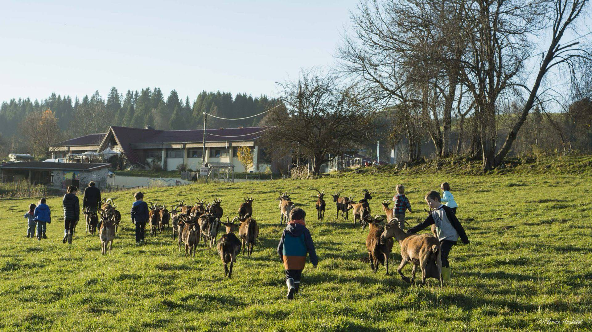
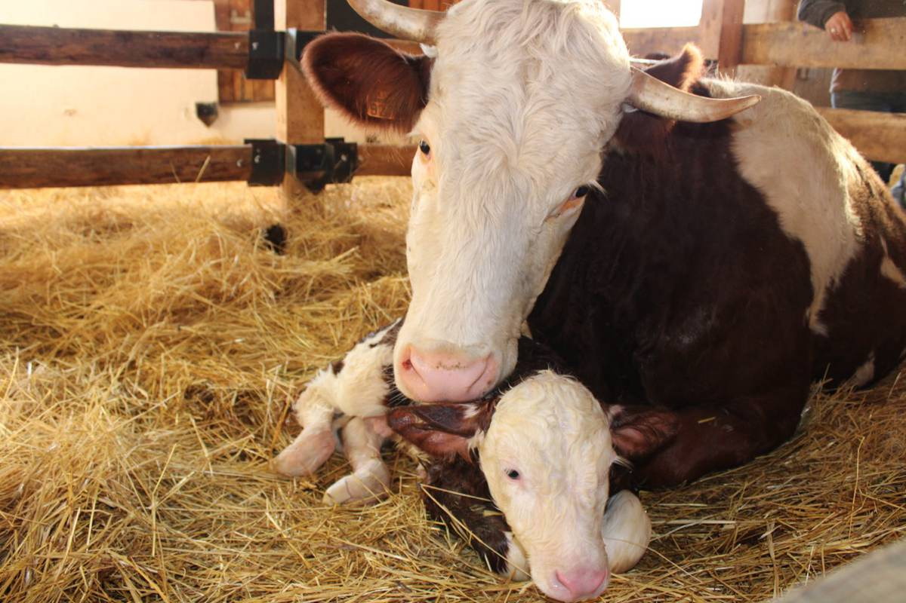
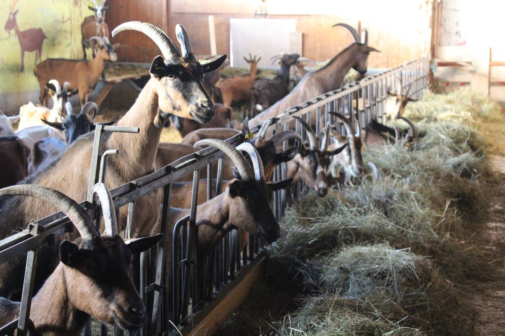
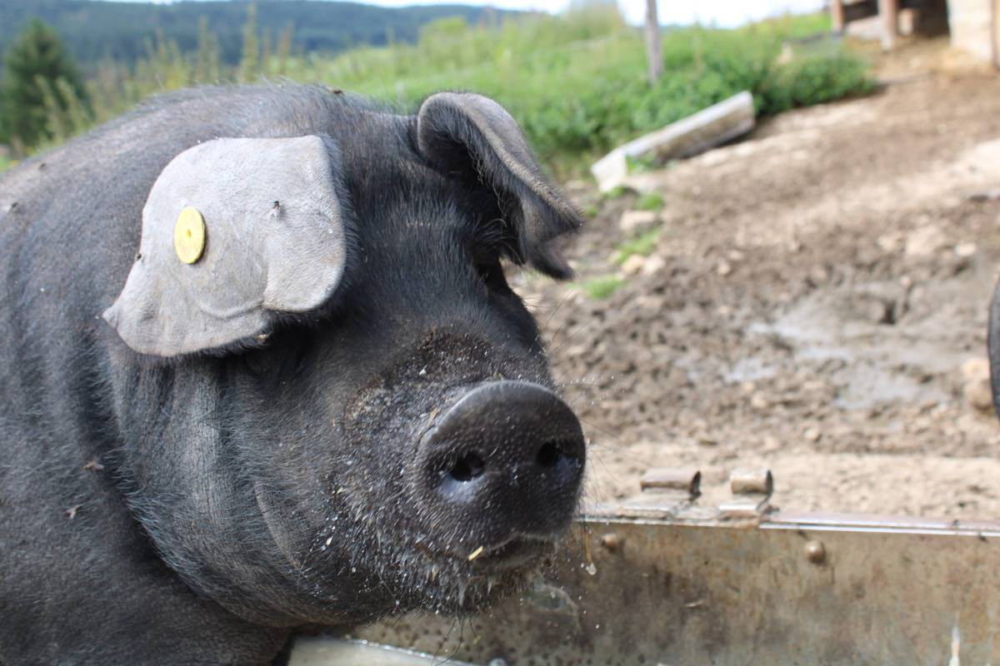
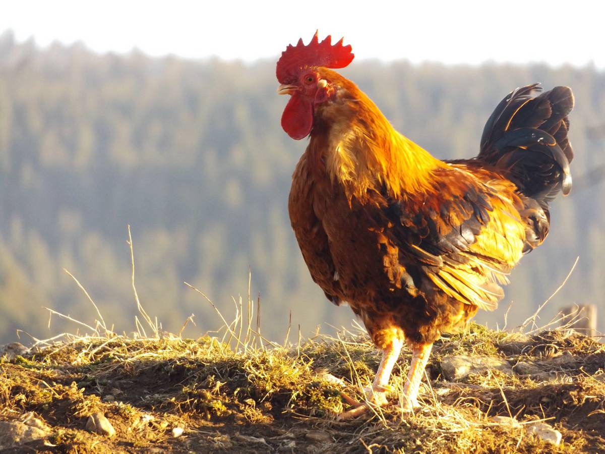
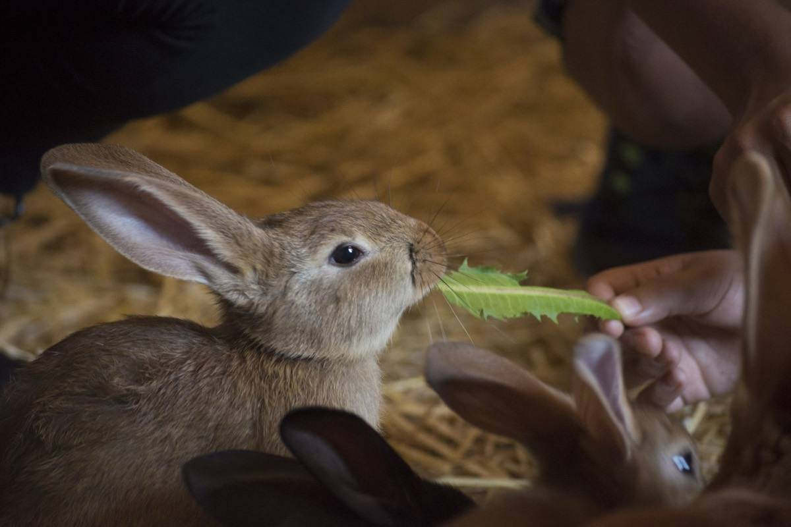
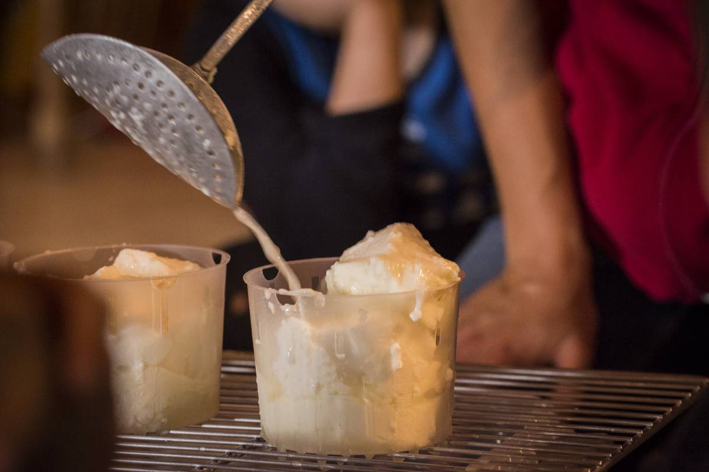
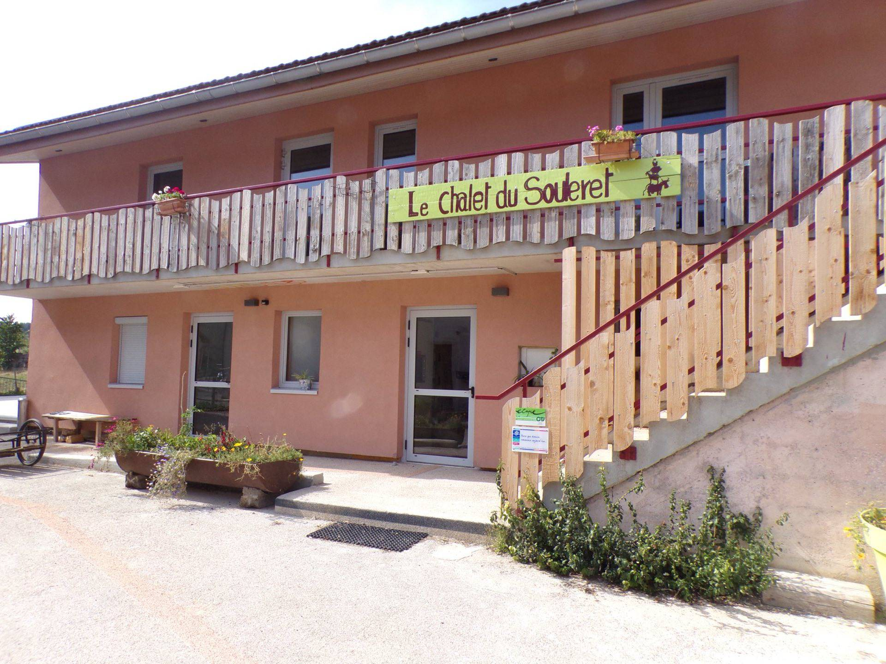
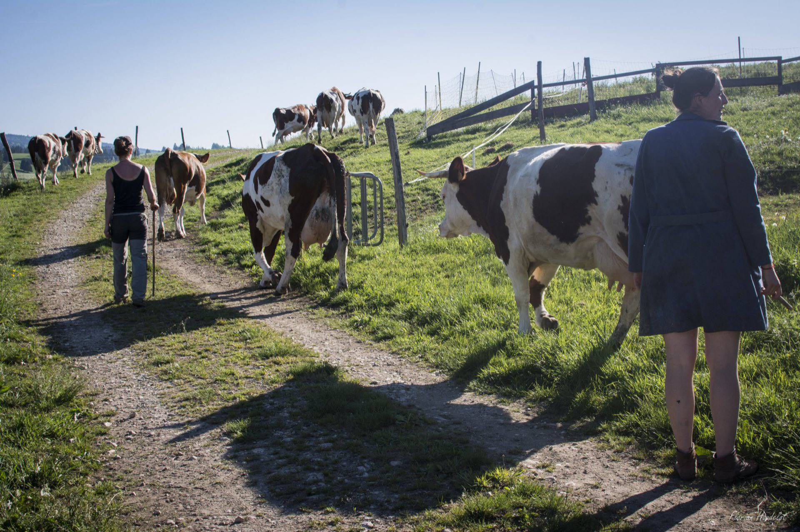

Ferme pédagogique et productive · Haut-Doubs
À la Bata, on apprend la ferme en la faisant.
Vaches, chèvres, cochons, lapins, poules, une fromagerie, un fournil au feu de bois et un chalet de 62 places. Depuis 1980, le CLAJ de Franche-Comté accueille classes, colos, familles et groupes à Rochejean, au pied du Mont d’Or.
Photo : Florian Houdelot
Par où commencer
Vous venez pour…
Chaque accueil a sa page, ses tarifs et son formulaire. Votre demande arrive directement à la bonne personne de l’équipe, déjà complète.

01 Pédagogique et productive
Ici, les animaux ne sont pas un décor.
La Batailleuse est une vraie ferme, qui vit de ce qu’elle produit. Les enfants qui viennent ici ne regardent pas la ferme : ils y travaillent, à côté des paysan·nes.
- Élevage en agriculture biologique : les chèvres depuis 1998, les vaches depuis 2001.
- Fromage de chèvre fabriqué tous les matins, de mars à octobre.
- Pain au levain cuit au four à bois, trois fournées par semaine.
- Un collectif autogéré, où chaque salarié·e a le même pouvoir de décision.





La Bata en quelques chiffres
Plus de 45 ans d’aventure collective.
Tout a commencé par une souscription : en 1980, la fédération du CLAJ achète une ancienne ferme de Rochejean, et des chantiers bénévoles y aménagent les premiers dortoirs.
02 Nos accueils
Toute l’année, pour tous les âges.
Les prix sont affichés, les formules expliquées. Pour le reste, l’équipe construit le programme avec vous.

Classes découvertes
De 3 à 5 jours, en pension complète au chalet, avec ateliers à la ferme et veillées.

Colos de vacances
Apprentis fermiers (6-10 ans), Tout autour de la ferme (10-13 ans), L’aventure des alpages (14-17 ans).

Le Chalet du Souleret
62 places pour les familles et les groupes : pension complète, demi-pension ou gestion libre.

Anniversaire à la ferme
Un après-midi de soins aux animaux, préparé par l’équipe d’animation, et une salle pour le goûter.
03 Agenda
Cet automne à la Bata
Les dates passées disparaissent toutes seules. Sur le vrai site, chaque rendez-vous aurait son inscription en ligne et son nombre de places restantes.
Les pizzas du fournil
Pendant les vacances scolaires, le fournil se chauffe pour des pizzas bio à emporter, cuites au four à bois. Les jours de vente sont publiés ici dès qu’ils sont fixés.
-
18sept.
Atelier parentalité : « Comment la parentalité me transforme ? »
À 19h30, à la ferme. Une soirée pour souffler et échanger entre parents, animée par une consultante en parentalité.
-
25sept.
Atelier parentalité : « Écouter mon enfant, qu’est-ce que ça veut dire ? »
À 19h30, à la ferme. Une soirée pour souffler et échanger entre parents, animée par une consultante en parentalité.
-
26sept.
Atelier parents-enfants
Samedi de 9h30 à 11h30. Explorations et créativité à vivre en duo ou en famille, pour les 5-12 ans.
-
7oct.
Projection d’un film
Mercredi à 20h, au Chalet du Souleret.
-
9oct.
Atelier parentalité : « (Ré)inventer ma parentalité »
À 19h30, à la ferme. Une soirée pour souffler et échanger entre parents, animée par une consultante en parentalité.
-
10oct.
Atelier parents-enfants
Samedi de 14h30 à 16h30. Explorations et créativité à vivre en duo ou en famille, pour les 5-12 ans.
-
14oct.
Atelier parents-enfants
Mercredi de 14h30 à 16h30. Explorations et créativité à vivre en duo ou en famille, pour les 5-12 ans.
-
17oct.
Vacances de la Toussaint
La ferme ouvre du mardi au samedi, de 16h30 à 19h, jusqu’au 31 octobre.
Les prochaines dates arrivent bientôt. Inscrivez-vous à la lettre d’information pour les recevoir.

04 Le collectif
« Nous sommes douze salariés, douze personnes de divers horizons aujourd’hui liées au C.L.A.J. »
L’équipe de la Batailleuse
Pas de directeur ni de hiérarchie : les décisions se prennent en réunion d’équipe, et chacun·e est responsable de son secteur. Éducation populaire, agriculture paysanne, vie collective : la Bata fait ce qu’elle dit depuis plus de quarante ans.
Toute cette histoire est racontée dans un livre paru en août 2025 aux éditions Repas : La Batailleuse, un centre d’accueil et une ferme autogérés dans le Haut-Doubs.
Lire l’histoire de la BataNous joindre
Le bon contact, du premier coup.
L’équipe est souvent à la traite, au fournil ou avec des enfants. Pour une réservation, le formulaire est le plus rapide : votre demande arrive complète à la bonne personne.
Classes, colos, anniversaires
L’équipe d’animation
Séjour au Chalet du Souleret
L’accueil du chalet
Soutenir la Bata
Adhérer, c’est faire vivre la ferme.
Depuis le 1er avril 2026, la visite libre passe par l’adhésion : 2 € la journée ou 10 € l’année par adulte. C’est gratuit pour les mineurs, et la boutique reste en accès libre.